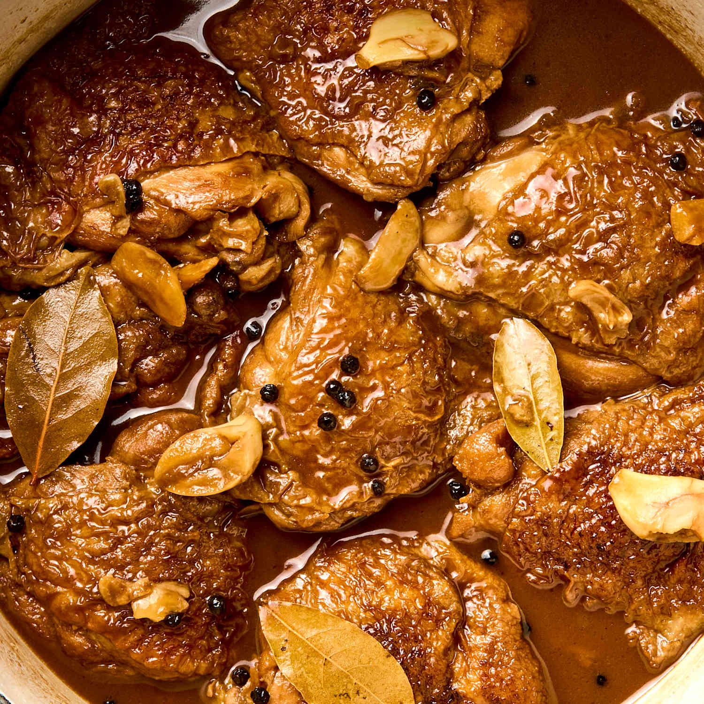
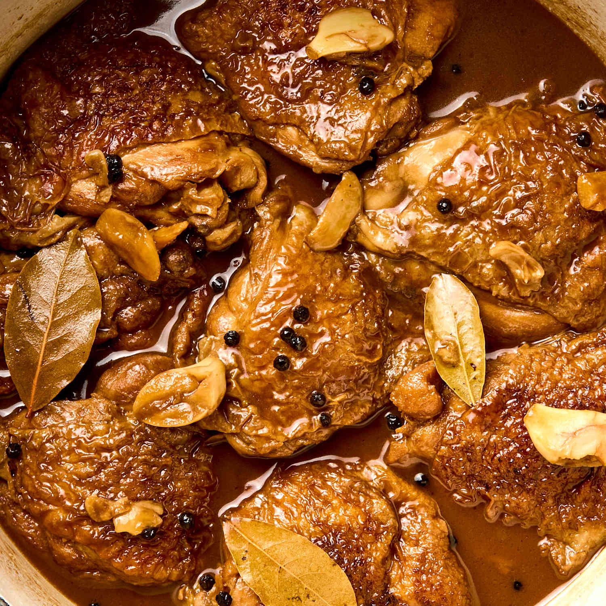

Did You Know?
Adobo is the Unofficial National Dish
Almost every family in the Philippines has its own special recipe for Adobo, which is meat (like pork or chicken) cooked in soy sauce, vinegar, garlic, and black peppercorns.
 

We Eat with a Spoon and Fork
In the Philippines, the main eating utensils are a spoon and a fork. The spoon is used for scooping food into your mouth, and the fork is used to push food onto the spoon!
"Kamayan" Means Eating with Hands
For big feasts and celebrations, sometimes Filipinos eat "Kamayan" style, which means eating with your bare hands! Food is laid out on big banana leaves for everyone to share.